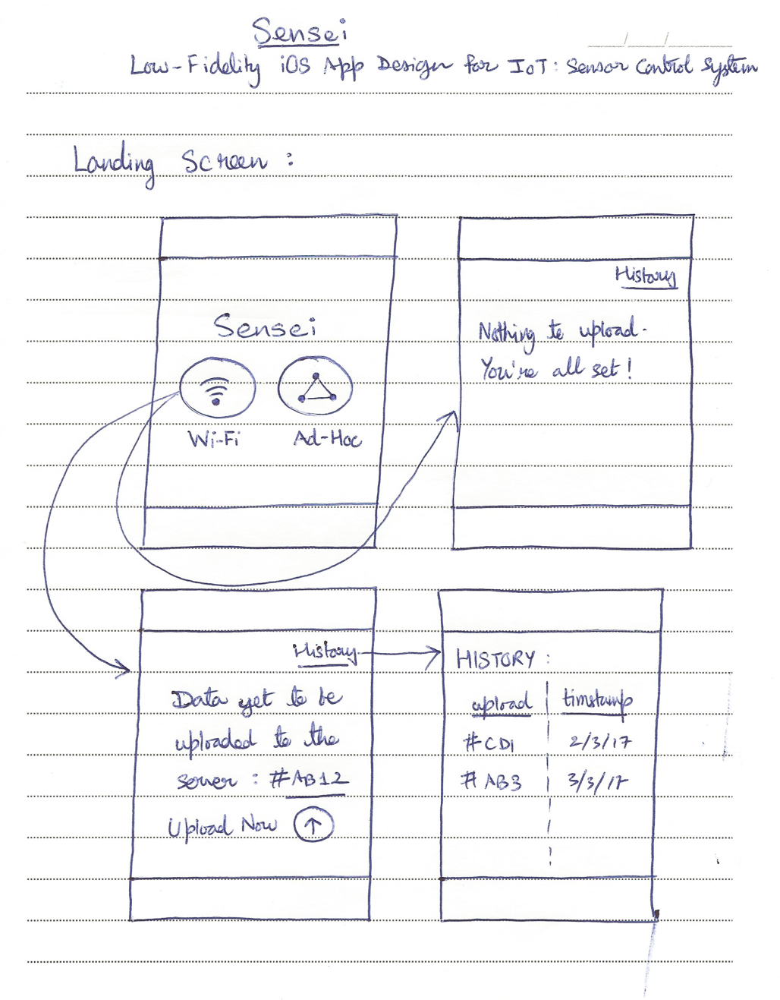
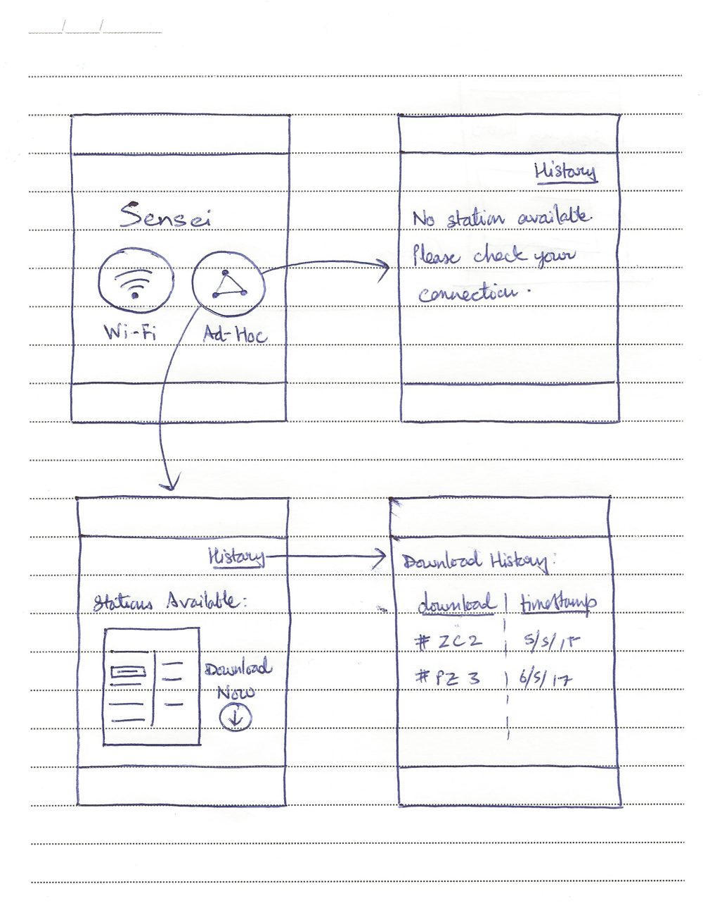
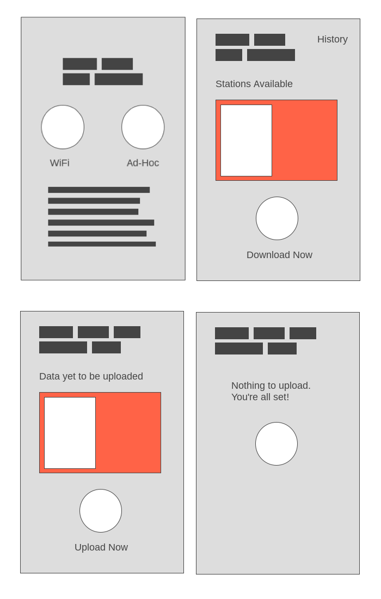
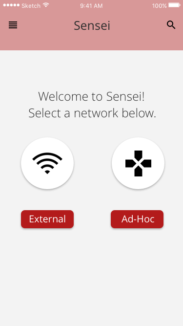
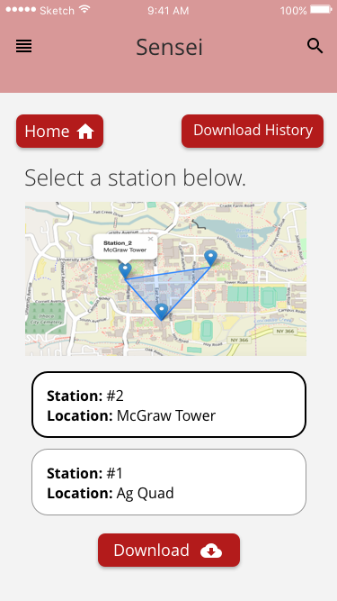
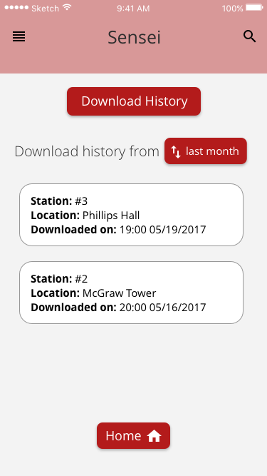
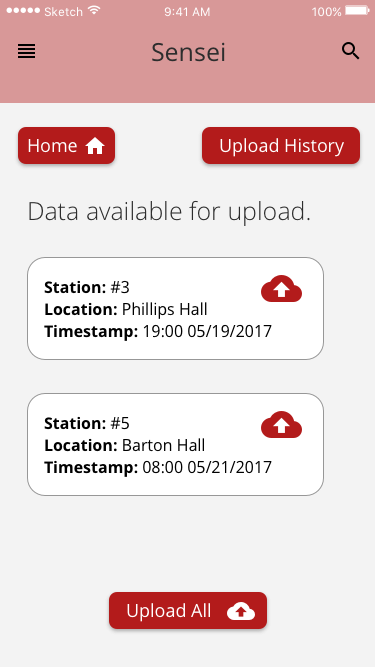
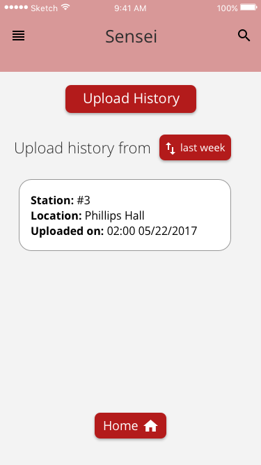
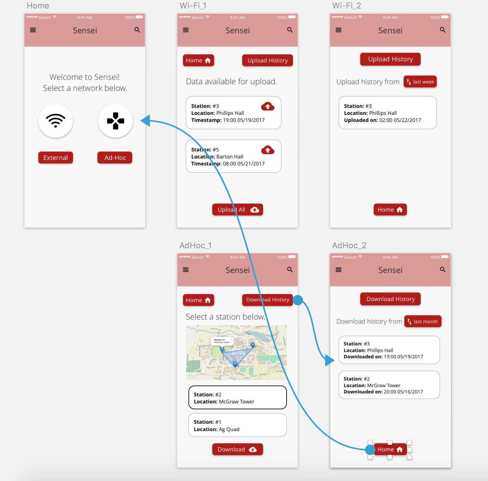

tl;dr
To understand the UX design workflow, I created an iOS app prototype which can be viewed here.
And here is how I did it.
The Why.
Being a developer, I have always been fascinated by the design portfolios on Behance and Dribbble. Although I have been creating UIs using code but the concept of UX design workflow was fairly new to me. And on one fine Saturday afternoon, I decided to give it a shot.
The What.
I recently completed a project that was about building a sensor network to be deployed in the wild. The sensor stations would measure rainfall and upload the data to the remote server (if there is an external network available) or save it till the user safely downloads the log from them. Read more about the project here.
Now, if there is an external network available, the stations work fairly well by measuring rainfall and uploading data to the remote server at regular intervals. However, in the absence of an external network, the user can go to the site and download the data off the station by connecting to their Ad-Hoc network and then upload it to the server on reaching home.
The How.
I was inspired by the following workflow approaches.
My goal was to understand the whole prototyping process by building low, mid and high fidelity wireframes of an iOS app for the project mentioned above. Another objective was to identify the right tools that will become a part of my go-to toolset for future design tasks.
Low Fidelity Prototype
After trying out different test-cases and user flows, I finished my Lo-Fi prototype on paper. Using pen and paper liberates you from wasting time on making things pixel-perfect and focus on the main content.
The landing page provides the user the option to switch to a network — Wi-Fi (when at home) or Ad-Hoc (when in the woods, near sensors). I created two workflows, one each for Wi-Fi and Ad-Hoc.
 Medium Fidelity Prototype
Once I was satisfied with my pen and paper design, it was time to accelerate things further. Before indulging myself in the nitty-gritty of the app in Sketch, I wanted to prepare a minimalistic digital version of my pen and paper design.
After fiddling with a few tools, I finally settled with Wireframe.cc. It provides you with a barebones structure for creating the prototype with several components for inserting dummy images, headings and paragraphs.
Here is the prototype I made using Wireframe.cc, pretty simple to begin without extra frills.
High Fidelity Prototype
A thing to note here is that prototyping is not necessarily an A to Z process. Transferring the paper design to screen may introduce a few design challenges and optimizations that should be taken care of. The aim is to continuosly adapt the design to suit the changing requirements.
After the medium fidelity prototype, it was time to add in some iOS components to make it look like a real app. Here is the final prototype I made using Sketch.
    To add in some interactivity, I used the Craft plugin (by InVision). It allows the user to define hit areas that can be used to trigger certain actions. The final interactive prototype can be viewed here.
Made in Ithaca, NY